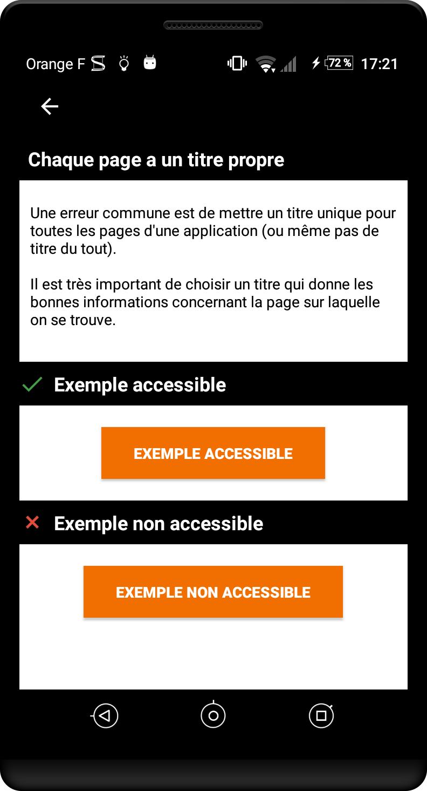
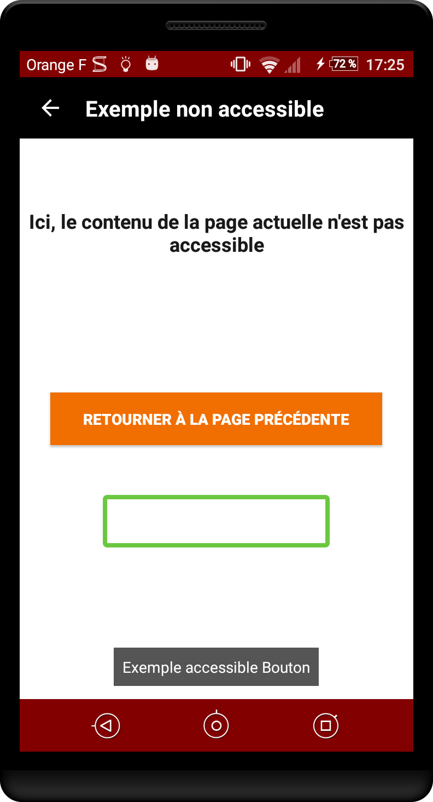

Les critères incontournables sous Android pour la conception
Ce guide a pour objectif de présenter les différents critères d’accessibilité à respecter pour obtenir une application Android accessible. Chaque critère est présenté en expliquant pour qui ce critère est important, quand on peut le mettre en place, pourquoi il est important et la règle d’accessibilité qui en découle. Les critères sont explicités par des exemples de code et des captures d’exemples réels. Nous vous invitons à installer l’application mDAN pour obtenir des exemples fonctionnels avec TalkBack, le lecteur d’écran d’Android, et d’autres outils d’assistance. Pour plus d’information sur l’outil (comment l’activer, comment s’en servir…) nous vous invitons à vous référer à la section concernant TalkBack.
Pour le web, le niveau d’accessibilité demandé à toute interface HTML par le groupe Orange est le respect des critères du niveau AA des Web Content Accessibility Guidelines (WCAG) 2.1, sans point bloquant suite à un test utilisateur d’aide technique pour les principaux scénarios d’utilisation des fonctionnalités du site ou de l’application. Pour les applications mobiles natives, une transposition de ces critères et le respect des recommandations de la plateforme Android en terme d’accessibilité est demandé, voir ces recommandations. L’objet de ces pages étant d’en faire un « digest » sans s’y substituer.
Images #
Cible : tout le monde (sur réseau à faible bande passante…) et en particulier les personnes déficientes visuelles.
Quand : lors de la conception et pendant le développement.
Description :
Les images sont très souvent utilisées pour transmettre de nombreuses informations. Comme le dit l’adage, une image vaut mille mots. Les non-voyants ne pouvant voir les images, il est important que celles-ci possèdent une alternative qui donne toutes les informations portées par l’image.
Dans le cas d’une image contenant du texte, l’alternative sera ledit texte. Dans le cas d’une image qui apporte des informations sous la forme d’un graphe, dessin ou autre, l’alternative devra contenir toutes les informations nécessaires présentes dans l’image.
Certaines images sont utilisées à des fins décoratives. Ces images ne nécessitent pas d’alternative. Par défaut sous Android, les images ne sont pas vocalisées par le lecteur d’écran TalkBack.
Les illustrations de l’application sont également considérées comme des images décoratives. La règle est donc la même : il n’y a pas d’alternative textuelle à ajouter.
Les icônes sont, a contrario, largement utilisées en tant que bouton pour des fonctionnalités diverses. Elles ont donc besoin d’alternatives textuelles pertinentes.
L’alternative d’une image est renseignée via l’attribut contentDescription (disponible pour tout élément héritant de View).
À vérifier :
- les images portant de l’information restituent cette information à travers leur alternative textuelle,
- les images décoratives n’ont pas d’alternative textuelle.
Objectif utilisateur :
Permettre l’accès à l’information incluse dans une image pour des utilisateurs qui n’y ont pas accès. Point bloquant : une image sans description textuelle est inexploitable par des personnes ayant des déficiences visuelles.
Exemples :

En décomposant l’image :
 pas de
pas de contentDescription
imageView.setContentDescription("paramètres")-
imageView.setContentDescription("éditer le nom de l’image")
Couleurs #
Cible : tout le monde (soleil sur l’écran, impression noir et blanc…) et en particulier les personnes malvoyantes, les seniors et les personnes avec des problèmes de vision (daltonisme, vision des contrastes, etc.)
Quand : dès la phase de conception et lors du développement.
Description :
Les couleurs jouent un rôle très important dans la transmission des informations. On associe certaines couleurs à des concepts ou à des sensations, mais il ne faut pas oublier qu’une partie de la population ne distingue pas correctement les couleurs.
À vérifier :
- La couleur ne doit jamais être le seul canal de transmission d’une information, d’indication d’une action, de sollicitation d’une réponse ou de distinction d’un élément.
- Le contraste entre les couleurs de texte et de fond doit aussi être suffisant (7:1 sur mobile, 4,5:1 pour les textes larges, à calculer avec Colour Constrast Analyzer par exemple). Du fait des contraintes des mobiles (écran, luminosité,…) un niveau AAA est demandé.
Objectif utilisateur :
Faciliter la lecture à tous les utilisateurs, déficients visuels ou personnes dans un environnement lumineux défavorable (en mobilité).
Permettre aux utilisateurs ne distinguant pas les couleurs (daltoniens, déficients visuels, déficients auditifs, utilisateurs de mobile en luminosité extérieure… ) d’accéder tout de même à l’information par d’autres moyens.
Outil :
L’application Colour Constrast Analyzer permet de mesurer rapidement des niveaux de contraste de couleurs (gratuit pour Mac et Windows).
L’application AccessibilityScanner permet de tester directement vos applications sur certains critères d’accessibilité et notamment les couleurs. Disponible à partir d’Android 6.
Exemple de contraste non valide :
Le texte "film | 20h40 …" ne présente pas un contraste suffisant. Celui-ci ne sera pas lisible par tous les utilisateurs.

Exemple de passage d’information par la couleur valide et non valide :
Alternative textuelle #
Cible : tout le monde et en particulier les personnes déficientes visuelles.
Quand : dès la conception, à la rédaction du contenu et pendant le développement.
Description :
Les alternatives textuelles sont au cœur de l’accessibilité sur mobile. Grâce à elles, un utilisateur non-voyant peut utiliser une application sans perte d’information.
Tout comme pour les images, il est important de renseigner une alternative textuelle lorsque l’information n’est pas disponible pour les personnes malvoyantes/non-voyantes. C’est le cas des composants fournissant de l’information par la couleur, la forme, la position, le son… Sur mobile, tous les composants peuvent recevoir une alternative textuelle, il est donc possible d’enrichir la vocalisation native d’un élément, y compris celle d’un simple texte.
La place sur mobile étant réduite, on utilise bien souvent des abréviations pour les textes. Mais cependant, cela pose un problème aux utilisateurs de synthèse vocale qui restituent les abréviations telles quelles. Pour corriger ces vocalisations, il suffit de placer une alternative textuelle sur le texte. Cette alternative contient le texte non abrégé. À noter que TalkBack sait reconnaître quelques abréviations courantes. Par exemple, « etc. » et « Dr. » sont bien vocalisées « et cetera » et « Docteur ».
Certaines images sont régulièrement associées à du texte pour donner une information. C’est le cas notamment des « messages non lus » où une infobulle donne le nombre de messages à lire et où une image donne l’information « message ». Dans ce cas, la solution consiste à placer une alternative textuelle sur le texte qui donne toutes les informations nécessaires. Par exemple : « 3 messages non lus ». On peut également placer cette alternative sur l’image, mais dans ce cas, il faut penser à rendre le texte « invisible » pour le lecteur d’écran.
L’alternative textuelle d’un élément est renseignée via l’attribut contentDescription (disponible pour tout élément héritant de View). Pour les boutons présents dans l’ActionBar (ou ToolBar), c’est l’attribut title qu’il faut renseigner.
Le texte ou son alternative est vocalisé automatiquement avec des informations sur le type de composant (bouton, case à cocher…), de son état éventuel (coché décoché, sélectionné), s’il est utilisable (désactivé). Pour plus d’informations techniques sur ces attributs, nous vous conseillons de lire la section des alternatives textuelles dans le guide développeur.
À vérifier :
- Les éléments de l’application qui nécessitent une alternative en possèdent bien une,
- Les alternatives textuelles de l’application sont explicites et compréhensibles.
Objectif utilisateur :
Permettre aux utilisateurs du lecteur d’écran d’accéder à toutes les informations véhiculées par l’application.
Exemple :
Ci-dessous, un exemple fréquent d’une icône qu’on couple avec du texte (infobulle) pour ajouter de l’information. Dans notre cas, l’icône « mail » couplée à l’infobulle de valeur « 3 » nous fait comprendre que nous avons « 3 mails non lus ». Si aucune alternative textuelle n’est ajoutée, 2 vocalisations seront lues « bouton sans libellé » et « 3 ». On comprend bien ici l’importance d’ajouter des alternatives textuelles.

containerView.setContentDescription("3 mails non lus, bouton"); //On ajoute l’alternative complète (construite dynamiquement au préalable) sur le conteneur
containerView.setImportantForAccessibility(View.IMPORTANT_FOR_ACCESSIBILITY_YES); //Le conteneur est une View, non visible par l’API d’accessibilité par défaut. On le rend visible.
mailImageView.setImportantForAccessibility(View.IMPORTANT_FOR_ACCESSIBILITY_NO); //On masque le bouton-icône pour éviter une redondance d’information
infobulleTextView.setImportantForAccessibility(View.IMPORTANT_FOR_ACCESSIBILITY_NO); //On masque le texte pour éviter une redondance d’information
containerView.contentDescription = "3 mails non lus, bouton" //On ajoute l’alternative complète (construite dynamiquement au préalable) sur le conteneur
containerView.importantForAccessibility = View.IMPORTANT_FOR_ACCESSIBILITY_YES //Le conteneur est une View, non visible par l’API d’accessibilité par défaut. On le rend visible.
mailImageView.importantForAccessibility = View.IMPORTANT_FOR_ACCESSIBILITY_NO //On masque le bouton-icône pour éviter une redondance d’information
infobulleTextView.importantForAccessibility = View.IMPORTANT_FOR_ACCESSIBILITY_NO) //On masque le texte pour éviter une redondance d’information
Titre et en-tête #
Cible : tout le monde
Quand : dès la conception et à la rédaction du contenu.
Description :
Le titre de la page est le premier élément qui est vocalisé ou vu sur un écran mobile. Il facilite la navigation pour tout le monde : à tout moment, on sait où on se trouve dans l’application.
Une erreur commune est de mettre un titre unique pour toutes les pages d’une application (ou même pas de titre du tout).
À vérifier :
- Chaque écran doit avoir un titre qui lui est propre ou qui permet de se repérer dans la navigation (couplé avec le bouton de retour).
Objectif utilisateur :
Permettre aux utilisateurs d’identifier le sujet d’une page, de se repérer et de se faire une idée précise du contenu de la page sans avoir à le lire.
Exemple non valide :
État des éléments #
Cible : tout le monde et en particulier les personnes déficientes visuelles.
Quand : lors du développement.
Description :
Si un élément ne restitue pas à la vocalisation son statut, sa nature ou son état, l’utilisateur de TalkBack est dans l’impossibilité de comprendre ce qui se passe à l’écran. Ne pas préciser qu’une zone est dépliée ou que l’on se trouve face à un système d’onglets sont des exemples très fréquents.
Grand classique de ce problème : les onglets. Les différents types d’onglets proposés dans Android ne donnent pas toutes les informations sur leur nature et sur leur état. Il est donc à la charge du développeur de donner ces informations à l’utilisateur via les attributs d’accessibilité correspondants (contentDescription). En l’occurrence, une bonne alternative pour le titre d’un onglet peut être : "sélectionné, titre de l’onglet, onglet 1 sur 3"
Autre classique d’élément qui ne restitue pas par défaut son état : les zones dépliables. Encore une fois, c’est grâce à l’alternative textuelle du titre de la zone dépliable que l’on peut donner à l’utilisateur de TalkBack le statut de celle-ci.
Pour renseigner ce genre d’information, il faut utiliser l’attribut contentDescription (disponible pour tout élément héritant de View).
À vérifier :
- Tout élément dont le statut est modifié durant l’utilisation de l’application doit restituer son état à travers son alternative textuelle. Par exemple, un élément qui peut être sélectionné/non sélectionné doit restituer son état à travers une alternative textuelle.
Objectif utilisateur :
Permettre aux utilisateurs de lecteurs d’écran d’avoir accès aux informations des composants, leur état, leur nature afin qu’ils puissent les utiliser sans difficultés.
Exemple :

Pour obtenir un exemple de code qui corrige ce problème, nous vous invitons à vous référer à la page du guide développeur correspondante.
Composant standard #
Cible : tout le monde.
Quand : en phase de sélection des briques logicielles et lors des développements.
Description :
L’accessibilité est prise en compte dans les composants natifs (la plupart du temps). De plus, l’utilisation de composants standards permet à l’utilisateur de se retrouver dans une situation et un comportement habituels. La navigation dans une interface standard est donc plus confortable.
Utiliser au maximum les composants natifs en modifiant leur apparence. Si aucun composant standard ne permet de répondre au besoin, créer un composant dédié basé sur un composant standard en veillant à conserver la cohérence de navigation et l’accessibilité.
Objectif utilisateur :
Permet à tous les utilisateurs d’interagir plus intuitivement avec l’interface.
Objectif technique :
Améliore globalement la maintenabilité. Réduit les temps de développement.
Zone de clic #
Cible : pour tous et en particulier les personnes avec des déficiences motrices
Quand : dès la phase de conception et lors du développement.
Description :
Une taille insuffisante pour la zone d’action d’un composant peut empêcher certains utilisateurs de profiter pleinement de l’application. Cela peut engendrer des frustrations qui peuvent conduire à la désinstallation de l’application. Chaque élément cliquable de l’application doit donner à l’utilisateur une taille suffisante pour sa zone d’action.
À vérifier :
- Google définit pour son système une taille de zone de clic minimum de 48dp (en hauteur ET largeur, avec 8 dp de marge autour de l’élément).
Objectif utilisateur :
Améliorer le confort de navigation au toucher (touch).
Outil :
L’application AccessibilityScanner permet de tester directement vos applications sur certains critères d’accessibilité et notamment la taille des zones de clic. Disponible à partir d’Android 6.
Exemple valide :
Dans les exemples ci-dessous, le cadre noir correspond à la taille de la zone interactive.
Exemple non-valide :

Élément fantôme #
Cible : les personnes déficientes visuelles.
Quand : lors du développement.
Description :
Bien qu’invisibles à l’écran, certains éléments peuvent être lus par le lecteur d’écran (éléments positionnés en dehors de la zone visible ou masqués par d’autres éléments). La superposition d’écrans est quelque chose de courant sur mobile, mais cela engendre des problèmes d’accessibilité très lourds à corriger si elle n’est pas faite correctement dès le départ. Un lecteur d’écran tel que TalkBack est capable de lire les informations d’une vue qui est placée « sous » une autre. Mais si l’utilisateur n’est plus capable d’interagir avec cette vue, cela perturbe totalement sa navigation et celle-ci devient vite impossible.
Grand classique du problème : les fragments. Un fragment est un composant qu’on peut facilement superposer par-dessus un autre sous Android. Une mauvaise utilisation des fragments peut aboutir à une navigation impossible avec le lecteur d’écran.
Consulter l’article sur l’utilisation des fragments pour plus d’informations.
À vérifier :
- TalkBack ne doit pas vocaliser d’éléments indésirables appartenant à un autre écran que celui en cours de consultation.
Objectif utilisateur :
Permettre la navigation dans l’application sans avoir d’élément perturbant, non utilisable, sur la vue courante.
Exemple non-valide :
Dans l’exemple ci-dessous, le cadre vert correspond au focus de TalkBack. Ce dernier vocalise (la vocalisation est affichée en bas de l’écran sur la capture) un contenu se trouvant derrière la vue active.

Taille des textes #
Cible : tout le monde et en particulier les personnes déficientes visuelles.
Quand : lors de la conception et lors du développement.
Description :
L’utilisateur a la possibilité d’augmenter la taille du texte via une option d’accessibilité. Afin que l’application réagisse correctement à cette option, il est nécessaire d’utiliser des tailles de texte dynamiques qui s’ajusteront en fonction des paramètres utilisateurs. Un texte trop petit sera facilement ignoré par certains utilisateurs malvoyants.
L’application devra mettre en œuvre des tailles de textes dynamiques, s’assurer de la bonne réactivité des zones d’affichage au grossissement de texte (conteneurs qui s’adaptent à la taille de leur contenu). Il faut aussi assurer une taille minimum pour les textes (14sp).
Afin de permettre à l’option « grand caractère » d’interagir correctement avec l’application, plusieurs points sont à respecter durant les développements :
- Utiliser une taille de police dynamique : le « sp ». Cette unité, spécifique à Android, permet d’obtenir une taille de police en fonction de la densité de pixel de l’écran. Il est plus que recommandé de l’utiliser pour les textes, ne serait-ce que pour obtenir un design uniforme sur tous les types de devices Android.
- Gérer les débordements de contenu : une erreur courante est d’utiliser une taille de texte dynamique (« sp » donc) mais de ne pas faire attention au conteneur. Si le texte grossit, le conteneur doit en faire autant pour ne pas qu’il y ait de débordement. On peut parfaitement jouer avec le
min-heightet leheightdes conteneurs pour obtenir un résultat correct (leheightàwrap_contentet lemin-heightà la hauteur voulue par défaut).
À vérifier :
- L’application réagit correctement à l’option grand caractère,
- Les textes de l’application ont une taille minimum de 14sp.
Objectif utilisateur :
Permettre aux utilisateurs (malvoyants, en mobilité, seniors…) d’augmenter la taille du texte sans perte d’information pour accéder plus aisément au contenu.
Outil :
L’application AccessibilityScanner permet de tester directement vos applications sur certains critères d’accessibilité et notamment la taille des textes. Disponible à partir d’Android 6.
Exemple :

Contrôle de contenu #
Cible : tout le monde et en particulier les personnes déficientes visuelles et cognitives.
Quand : lors de la conception et lors du développement.
Description :
Sur mobile, les lecteurs d’écran essayent de transmettre au maximum à l’utilisateur les changements de contexte. Dans certains cas, cela peut donner des vocalisations permanentes, et donc inaudibles, ou empêcher toute action de l’utilisateur.
L’utilisateur doit rester maître du contenu à tout instant. C’est particulièrement vrai avec le contenu interactif. Il faut donc éviter par exemple qu’une vidéo ne se lance directement en plein écran, qu’une vidéo ne se lance directement sans une action au préalable de l’utilisateur, qu’un carrousel ne défile de manière automatique, etc.
À vérifier :
- Les contenus interactifs peuvent être maîtrisés par l’utilisateur (présence d’un bouton pause sur carrousel automatique, bouton accessible pour sortir du mode plein-écran etc)
Objectif utilisateur :
Permettre aux utilisateurs de rester maîtres de l’application. Permettre à l’utilisateur de lecteur d’écran d’éviter une pollution sonore qui peut nuire à sa navigation.
Objectif technique :
Améliorer le référencement naturel.
Changement de contenu #
Cible : tout le monde et en particulier les personnes déficientes visuelles.
Quand : lors de la conception et lors du développement.
Description :
Lorsque du contenu est modifié dynamiquement à la suite d’une action de l’utilisateur, il faut le notifier à la synthèse vocale. Sans retour vocal, l’utilisateur ne sait pas qu’une action a été déclenchée.
Sur une page, si du contenu est modifié dynamiquement suite à une action utilisateur, il est important que le lecteur d’écran soit notifié afin qu’il déclenche une vocalisation. Par exemple, les listes qui se rafraîchissent, ou un compteur de temps.
Une simple vocalisation peut suffire à avertir l’utilisateur. Il est très facile de déclencher des vocalisations avec TalkBack. Attention : nous parlons de la vocalisation si TalkBack est activé et non pas de TTS (Text To Speech) qui peut fonctionner indépendamment du statut de TalkBack. Il suffit de faire appel à la méthode announceForAccessibility en lui passant en paramètre l’id de la chaîne de caractère à vocaliser. À noter : la méthode announceForAccessibility est disponible sur tout élément qui hérite de View et se fait dans la langue du système.
Il est également possible de spécifier à une vue qu’elle est une région live, c’est-à-dire que son contenu est susceptible d’être modifié dynamiquement et qu’elle doit dans ce cas prévenir l’API d’accessibilité. Cela aura pour conséquence de générer des vocalisations avec TalkBack par exemple. Un exemple type d’utilisation : sur un formulaire, si l’utilisateur fait une erreur et qu’un message d’erreur apparaît, la vue contenant le message doit être définie comme une région live. Il faut passer par la méthode setAccessibilityLiveRegion qui prend en paramètre un mode pour la région live. Il existe 3 modes :
ACCESSIBILITY_LIVE_REGION_NONE: cette vue n’est pas une région live. C’est la valeur par défaut de la plupart des vues.ACCESSIBILITY_LIVE_REGION_POLITE: en cas de changement dans la vue, des vocalisations sont effectuées sur les changements. Ces vocalisations sont « polies » ; elles sont moins prioritaires que les vocalisations système par exemple.ACCESSIBILITY_LIVE_REGION_ASSERTIVE: en cas de changement dans la vue, des vocalisations seront effectuées sur les changements. Ces vocalisations sont « rude » ; elles sont prioritaires et immédiatement vocalisées. À noter, la méthodesetAccessibilityLiveRegionest disponible sur tout élément qui hérite deView.
À vérifier :
- Avec un lecteur d’écran, s’assurer que les modifications dynamiques dans les pages sont bien vocalisées.
Objectif utilisateur :
Donner accès aux modifications des informations de l’application aux utilisateurs de lecteurs d’écran.
Scroll horizontal #
Cible : tout le monde et en particulier les personnes déficientes visuelles.
Quand : dès la phase de conception et lors du développement.
Description :
Un scroll horizontal peut être très difficile à détecter si aucun visuel n’aide l’utilisateur à comprendre qu’il existe plusieurs pages.
Ne pas hésiter à afficher un élément pour indiquer un scroll horizontal (des « points » par exemple). Quand cela est nécessaire, ajouter également des boutons « suivant » et « précédent ».
À vérifier :
- Les scrolls horizontaux sont indiqués visuellement
- Avec le lecteur d’écran activé, un mécanisme permet de passer de page en page lorsqu’un scroll horizontal est présent.
Objectif utilisateur :
Donner une indication visuelle aux utilisateurs lors de la présence de scrolls horizontaux. Permettre aux utilisateurs de lecteur d’écran d’utiliser les scrolls horizontaux.


Formulaire #
Cible : tout le monde et en particulier les personnes déficientes visuelles.
Quand : lors de la conception et lors du développement.
Description :
Lier les champs de formulaires avec leurs labels apporte une vocalisation supplémentaire qui permet à l’utilisateur de comprendre quoi remplir lorsqu’il arrive sur un champ de formulaire.
Il existe 2 grandes techniques pour réaliser cette liaison :
labelFor: permet de spécifier à une vue qu’elle est le label d’une autre vue. Cette méthode prend en paramètre l’idde la vue que l’on labellise. On peut utiliser cette méthode avec quasiment tout type de champ de formulaire. Utilisable depuis le xmlandroid:labelForou le codesetLabelFor.hint: permet d’ajouter un texte d’exemple quand le champ de texte est vide. Cette méthode ne marche que pour lesTextView. Prend en paramètre l’idd’une chaîne de caractère. Utilisable depuis le xmlandroid:hintou le codesetHint.
À vérifier :
- les champs de formulaire doivent être liés à un label si celui-ci est visible, sinon un
hintest présent.
Objectif utilisateur :
Améliorer la navigation et la compréhension globale de la page, car les champs de formulaires décrivant le contenu attendu facilitent leur saisie par les utilisateurs déficients visuels.
Ordre de lecture #
Cible : les personnes déficientes visuelles.
Quand : lors du développement.
Description :
L’ordre de lecture permet à l’utilisateur de lecteur d’écran de se repérer dans la navigation et d’assurer une cohérence fonctionnelle. Il est donc important d’y faire attention.
Par défaut, l’ordre de lecture de la synthèse vocale prend en compte plusieurs paramètres : la lecture « logique » (en France), soit de gauche à droite et de haut en bas, et la lecture du xml (ordre de déclaration des éléments). Il existe cependant certain cas où le lecteur d’écran n’arrive pas à déterminer un ordre et dans ce cas, il utilise l’ordre de définition des éléments, ce qui peut amener des vocalisations incohérentes.
Il est tout à fait possible de redéfinir cet ordre de lecture avec deux attributs :
accessibilityTraversalAfter: prend uniden paramètre et permet de spécifier à la vue qu’elle doit être « vue » par l’accessibilité après la vue passée en paramètre.accessibilityTraversalBefore: prend uniden paramètre et permet de spécifier à la vue qu’elle doit être « vue » par l’accessibilité avant la vue passée en paramètre.
À noter : ces attributs peuvent être utilisés directement dans le xml mais également dans le code via les méthodes setAccessibilityTraversalAfter et setAccessibilityTraversalBefore. Ces méthodes sont disponibles pour tout élément qui hérite de View.
À vérifier :
- L’ordre de lecture (celui de TalkBack) est logique et cohérent.
Objectif utilisateur :
Assurer un ordre de lecture logique et cohérent aux utilisateurs de lecteurs d’écran pour leur assurer une complète compréhension du contenu.
Exemple :
Dans cet exemple, l’ordre de lecture par défaut dépend complètement de l’implémentation et de l’ordre de déclaration des éléments. Dans ce cas-ci : vol+, vol-, 1, 2, 3, 4, 5, 6, 7, 8, 9, p+, p-, 0. Un ordre de lecture plus cohérent serait 1, 2, 3, 4, 5, 6, 7, 8, 9, 0, vol+, vol-, p+, p-.

volupButton.setAccessibilityTraversalAfter(myView.findViewById(R.id.remote0).getId());
voldownButton.setAccessibilityTraversalAfter(myView.findViewById(R.id.volup).getId());
chaineplusButton.setAccessibilityTraversalAfter(myView.findViewById(R.id.voldown).getId());
chainemoinsButton.setAccessibilityTraversalAfter(myView.findViewById(R.id.chaineplus).getId());
[…]
volupButton.accessibilityTraversalAfter = remote0.id
voldownButton.accessibilityTraversalAfter = volup.id
chaineplusButton.accessibilityTraversalAfter = voldown.id
chainemoinsButton.accessibilityTraversalAfter = chaineplus.id
[…]
Navigation au focus #
Cible : tout le monde et en particulier les personnes déficientes motrices qui utilisent un clavier pour naviguer.
Quand : lors de la conception et lors du développement.
Description :
La navigation au focus est très utile pour les personnes qui présentent des difficultés motrices ou cognitives. Cette navigation permet de passer d’élément interactif en élément interactif (élément sur lequel on peut effectuer une action). Elle correspond à la navigation que l’on peut faire avec un clavier Bluetooth lié à un smartphone.
Pour gérer la navigation au focus, il faut s’assurer de 3 choses :
- Permettre le focus sur les éléments interactifs : la navigation au focus ne concerne que les éléments interactifs. Si, par exemple, votre application possède des vues custom cliquables, il faut s’assurer que ces vues soient focusables en positionnant l’attribut
focusableàtrue. - Gérer l’affichage du focus : tout élément interactif peut recevoir le focus, il faut donc que le
state_focusedsoit défini et permette de distinguer d’un seul coup d’œil quel élément a le focus. - Gérer l’ordre du focus : à travers les options
nextFocusDown,nextFocusUp,nextFocusRightetnextFocusLeft, vous pouvez spécifier quelle vue doit prendre le focus selon l’utilisation des flèches tab, bas, haut, droit et gauche.
À noter : nextFocusDown, nextFocusUp, nextFocusRight, nextFocusLeft, focusable ainsi que d’autres options de gestion du focus sont accessibles directement dans le xml ou dans le code à travers les méthodes correspondantes.
Pour plus d’information sur la gestion du focus sous Android.
À vérifier :
- L’ordre de navigation au focus (clavier) est logique et cohérent.
- À la navigation au focus (clavier), il est possible de déterminer visuellement l’élément qui a le focus
Objectif utilisateur :
Permettre l’utilisation de l’application avec un clavier, dock tablette ou tout autre dispositif de navigation séquentielle.
Orientation de l’écran #
Cible : tout le monde et en particulier les personnes avec des déficiences visuelles ou motrices.
Quand : lors de la conception et lors du développement.
Description :
L’accès au contenu d’une application ne doit pas dépendre de l’orientation de l’écran (portrait et paysage), sauf si une orientation particulière est essentielle pour la compréhension ou l’utilisation du contenu (projection, tableau…).
À vérifier :
- L’utilisation de composants graphiques standard qui supportent les deux modes (fragments…), ou définir un
designspécifique à chaque orientation. - Que l’application n’est pas verrouillée dans un mode (portrait ou paysage).
Objectif utilisateur :
- Assurer une meilleure lisibilité du contenu pour les personnes qui utilisent le grossissement de caractères et passent du portrait au paysage en fonction de leur besoin.
- Assurer une meilleure lisibilité du contenu pour les écrans fixés sur support (lit d’hôpital, chaise roulante…).